Guía de Usuario S-FiDE GUI
Cómo usar la interfaz gráfica de S-FiDE para firmar y verificar documentos XML y PDF, paso a paso, con capturas reales de la propia aplicación. Pensada para quien usa el programa haciendo clic, no para quien integra los módulos por línea de comandos — para eso está el Manual Técnico de Integración.
Qué es esta guía
S-FiDE incluye una interfaz gráfica (S-FiDE GUI) que agrupa 13 funciones distintas de firma digital y verificación — firmar y verificar documentos XML y PDF, y consultar certificados digitales guardados en un token criptográfico, en un archivo, o en el almacén de Windows — todo desde una sola ventana, sin necesidad de escribir comandos.
Esta guía recorre cada una de esas 13 pantallas con capturas reales de la aplicación: qué hace cada una, qué significa cada campo, y qué puede pasar al presionar "Ejecutar" — tanto si todo sale bien como los mensajes más comunes cuando algo falta o está mal.
Las capturas de esta guía se hicieron sin un token ni certificado real conectado, por eso los formularios aparecen vacíos o con datos de ejemplo. Los mensajes de error y de éxito que se describen en cada sección son los mensajes reales que imprime cada programa — algunos con captura real (como "Ver Certificados de Windows", que no necesita ningún dato para ejecutarse), y el resto tomados textualmente de la documentación técnica del producto.
Instalación y primer arranque
S-FiDE es portable: no hay un instalador que registre nada en Windows. Se descomprime el ZIP de distribución y se ejecuta.
Cree primero una carpeta propia (por ejemplo C:\S-FiDE) y descomprima el ZIP dentro de esa carpeta — no directamente en la raíz de una unidad, el Escritorio ni Descargas. La distribución trae más de una decena de archivos .jar y el runtime completo de Java y JavaFX (varios cientos de MB); sin una carpeta contenedora, todo eso queda mezclado con sus otros archivos.
Para arrancar la interfaz gráfica, ejecute SFide-GUI.bat (Windows) o SFide-GUI.sh (Linux/macOS) dentro de esa carpeta. La primera vez que se ejecuta en una instalación (solo en Windows), S-FiDE crea automáticamente, tanto en el Escritorio como en una carpeta "S-FiDE" del Menú Inicio, tres accesos directos con el ícono propio de S-FiDE:
- Uno abre la aplicación.
- Otro abre esta misma guía en su navegador.
- El tercero abre el Manual Técnico de Integración.
Esto ocurre una sola vez — si borra alguno después, no se vuelve a crear solo. No requiere ninguna acción de su parte ni interrumpe el arranque; si por alguna política de seguridad de su organización no se pudieran crear (por ejemplo, PowerShell bloqueado), el programa arranca igual, sin avisos molestos, y simplemente no quedan esos accesos directos.
Si borró alguno sin querer, o si actualizó S-FiDE a una carpeta nueva y quiere que el acceso directo apunte ahí, use Herramientas → Recrear accesos directos en la barra de menú — recrea los tres a pedido, apuntando a la instalación desde la que lo ejecute, y le confirma con un mensaje si salió bien. El acceso directo a la aplicación no lleva el número de versión en el nombre, así que al pasar a una versión nueva, este mismo lo reemplaza en vez de sumar un ícono más al lado del anterior.
Recorrido de la interfaz
La ventana principal tiene tres zonas fijas:
- Panel lateral (izquierda): los 13 módulos disponibles, agrupados por ícono según lo que hacen — ⊙/▤ para "ver" información, ✎ para firmar, ✓ para verificar, ⧉ para los módulos exclusivos de Windows. Los tres módulos de Windows CSP/KSP solo aparecen en esta lista si S-FiDE corre sobre Windows.
- Formulario del módulo elegido (centro): una breve descripción arriba, los campos que ese módulo necesita, y el botón Ejecutar.
- Salida del Proceso (abajo): un panel colapsable que se expande solo cuando hay un resultado que mostrar — ahí aparece exactamente lo que el programa imprime, éxito o error, además de un pequeño diálogo emergente ("Estado del Proceso" / "Error") con el mismo resultado.
S-FiDE recuerda entre sesiones, sin que tenga que volver a escribirlos: la ruta de la biblioteca PKCS#11 o el archivo PKCS#12, el número de slot, el alias del almacén de Windows, la casilla "Salida simple" de los verificadores, el tamaño y posición de la ventana, y el último módulo que tenía abierto (reabre ahí directamente). Nunca guarda ninguna contraseña — esos campos siempre arrancan vacíos. Tampoco recuerda la posición X/Y de firma visible en PDF ni la opción "Bloquear documento después de firmar": a propósito, siempre hay que indicarlas de nuevo en cada firma, igual que el elemento/ID de un XML a firmar.
Los módulos, uno por uno
Los tres botones que aparecen abajo de cada formulario — Limpiar Salida, Ayuda, Salir — son los mismos en las 13 pantallas y no se repiten en cada sección.
1. Ver Slots de Token
TokenSlotsViewMuestra el contenido de cada entrada de un token PKCS#11: el número de slot que el resto de los módulos necesita como parámetro, y si hay un certificado presente, de quién es y su vigencia. Es la manera de distinguir, en tokens donde conviven un certificado vencido y su renovación en entradas distintas del mismo dispositivo —algo frecuente con las autoridades certificantes—, cuál es cuál antes de usarlo para firmar.
Campos
- Biblioteca PKCS#11: el archivo del fabricante del token (
.dllen Windows). El botón "Detectar automáticamente" y el selector de marca/modelo completan esta ruta por usted si reconocen el driver instalado. - Contraseña del token: el PIN del dispositivo.
Qué puede pasar al presionar Ejecutar
Éxito — lista, por cada entrada del token, su tipo (clave privada o certificado), sujeto, emisor, fechas de validez y número de serie. Si el token está vacío, no es un error: se informa "No se encontraron certificados ni claves en el token."
Error — biblioteca inexistente, proveedor PKCS#11 no disponible, contraseña incorrecta, o error al leer el token.
Un número elevado de intentos fallidos de PIN puede bloquear el token, según la política de seguridad de cada fabricante — a veces exige tramitar un certificado nuevo ante la autoridad certificante. No adivine la contraseña por prueba y error.
2. Ver Certificado de Token
TokenCertificateExtractorExtrae el certificado digital presente en un slot de un token PKCS#11: muestra en pantalla sus datos completos (sujeto, emisor, vigencia, número de serie) y además guarda una copia real en un archivo .PEM en disco — útil para conservarlo fuera del token, inspeccionarlo, o cargarlo en otra herramienta.
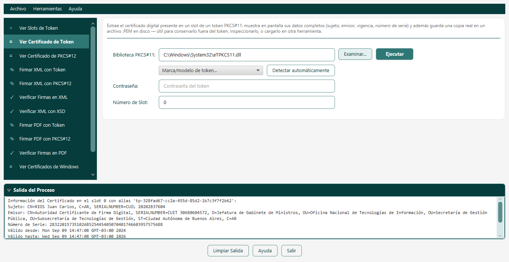
Campos
- Biblioteca PKCS#11 y Contraseña: igual que en "Ver Slots de Token".
- Número de Slot: el que mostró "Ver Slots de Token" para la entrada que le interesa — no es necesariamente el mismo número que muestre alguna herramienta del fabricante del token.
Qué puede pasar al presionar Ejecutar
Éxito — imprime Sujeto, Emisor, Número de Serie, Válido desde/hasta y Algoritmo de Firma, y guarda un archivo .pem nombrado según el certificado.
Error — biblioteca inexistente, proveedor no disponible, error al cargar el almacén, número de slot inválido, no se encontró certificado en ese slot, o error al exportar.
El archivo se guarda en la carpeta donde está instalado S-FiDE (no junto a ningún otro archivo que haya elegido) — revísela ahí después de ejecutar.
3. Ver Certificado de PKCS#12
PKCS12CertificateExtractorExtrae el certificado digital de un archivo PKCS#12 (.p12 o .pfx): muestra en pantalla sus datos completos (sujeto, emisor, vigencia, número de serie) y además guarda una copia real en un archivo .PEM en disco. Misma utilidad que el extractor de tokens, pero para certificados que ya existen como archivo.
Campos
- Archivo PKCS#12: el archivo
.p12/.pfxdel certificado. - Contraseña: la contraseña de ese archivo.
Qué puede pasar al presionar Ejecutar
Éxito — mismos datos que el extractor de token, más un archivo .pem (misma nota sobre dónde queda guardado que en el módulo anterior).
Error — archivo inexistente, archivo no es un PKCS#12 válido o contraseña incorrecta, archivo sin certificados, o error al exportar.
4. Firmar XML con Token
XMLSignerPKCS11Firma digitalmente un documento XML con la clave privada de un token criptográfico, usando SHA-256. Puede firmar el documento completo, o solo un elemento/párrafo específico identificado por su atributo Id= —una posibilidad general, válida para cualquier XML— que además es la que usan los documentos de comercio exterior ALADI/MERCOSUR (Certificados de Origen Digital, Declaraciones Juradas de Origen), cuyas firmas van embebidas sobre elementos puntuales del documento y no sobre el XML completo.
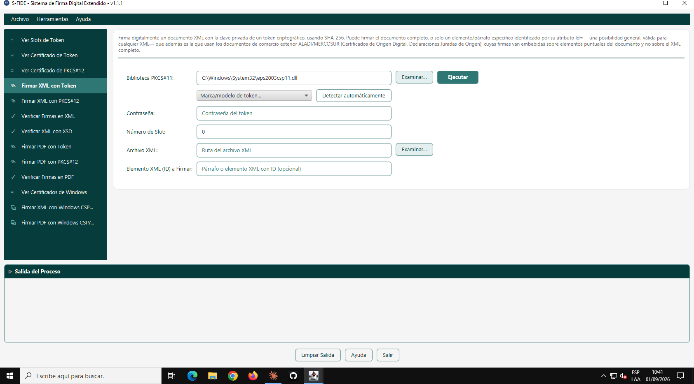
Campos
- Biblioteca PKCS#11, Contraseña, Número de Slot: igual que en los módulos de token anteriores.
- Archivo XML: el documento a firmar.
- Elemento XML (ID) a Firmar: déjelo vacío para firmar el documento completo, o escriba el identificador del elemento puntual a firmar (por ejemplo
COD,CODEH,DJO,DJOEHen documentos de comercio exterior — ver la solapa "Comercio Exterior" de la Ayuda).
Qué puede pasar al presionar Ejecutar
Éxito — crea un archivo <nombre>-signed.xml junto al original. Antes de firmar, valida por Internet que el certificado no esté revocado (ver recuadro abajo); si eso no se puede confirmar, avisa por el panel de salida y firma igual.
Error — biblioteca o archivo XML inexistente, contraseña incorrecta, el elemento indicado no existe en el documento, proveedor no disponible, el elemento ya tiene una firma aplicada, se intentó firmar CODEH/DJOEH sin una firma previa sobre COD/DJO, el certificado está revocado, o (caso extremo) el token no admite ningún mecanismo de firma compatible.
Desde la versión 1.2.0, antes de firmar se consulta si el certificado fue revocado (mismo mecanismo OCSP/CRL que "Verificar Firmas en XML"). Si está confirmado como revocado, no se firma. Si no se puede determinar (sin Internet, por ejemplo), se firma igual y se avisa por el panel de salida, sin preguntar nada — a diferencia de los módulos PKCS#12 y Windows CSP/KSP (ver "Firmar XML con PKCS#12"), acá no se pide confirmación porque la consulta necesitaría ingresar el PIN al token una vez más, con el riesgo de inhabilitarlo si se hace de más. La interfaz gráfica no ofrece, en ningún módulo, una forma de forzar la firma de un certificado confirmado como revocado.
5. Firmar XML con PKCS#12
XMLSignerPKCS12Firma digitalmente un documento XML con SHA-256, igual que la versión con token, pero usando un archivo de certificado PKCS#12 (.p12/.pfx) en lugar de hardware — ideal para pruebas, automatización de servidor, o certificados que no requieren token físico. Admite la misma firma por elemento vía Id= que la versión con token.
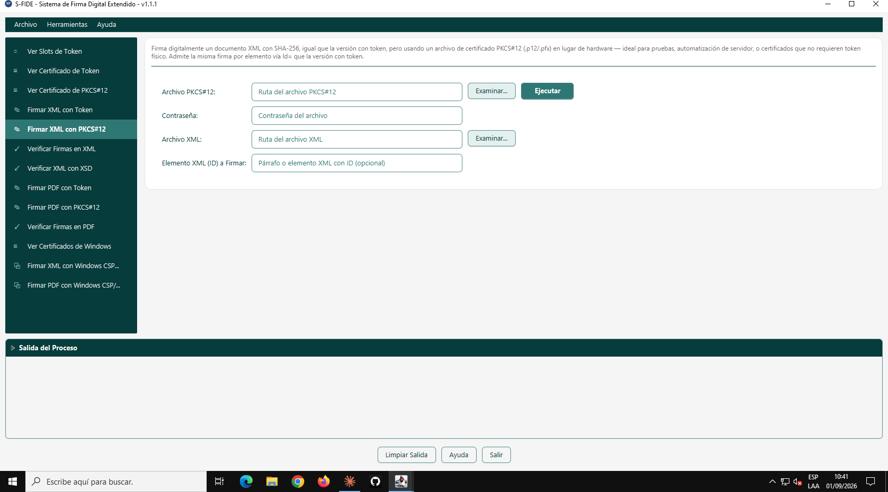
Campos
- Archivo PKCS#12 y Contraseña: el certificado a usar.
- Archivo XML y Elemento XML (ID) a Firmar: igual que en "Firmar XML con Token".
Qué puede pasar al presionar Ejecutar
Éxito — mismo resultado que "Firmar XML con Token": <nombre>-signed.xml junto al original.
Error — archivo PKCS#12 o XML inexistente, PKCS#12 inválido o contraseña incorrecta, PKCS#12 sin certificado, elemento inexistente, certificado revocado, o las mismas reglas de firma (elemento ya firmado, orden CODEH/DJOEH) que el módulo anterior.
Antes de firmar, la GUI consulta el estado de revocación del certificado. Si no está revocado, firma directo, sin interrumpir. Si no se pudo determinar (sin Internet, o el certificado no publica OCSP/CRL), aparece un diálogo: "No se pudo confirmar que el certificado no esté revocado. ¿Desea firmar de todas formas?" — "Aceptar" firma igual, "Cancelar" no firma nada. Si el certificado está confirmado como revocado, no se firma y no hay ningún diálogo ni forma de forzarlo desde la GUI. Este mismo comportamiento (con diálogo) también aplica a "Firmar PDF con PKCS#12" y a los dos módulos de Windows CSP/KSP — los módulos de token (PKCS#11) son la única excepción, ver la nota en "Firmar XML con Token".
6. Verificar Firmas en XML
XMLVerifySignaturesVerifica la integridad criptográfica de las firmas de un XML y consulta el estado de revocación del certificado firmante (OCSP, con reintento por CRL) contra la fecha de firma — no la fecha actual, para no invalidar firmas antiguas hechas con un certificado hoy ya vencido. Admite firmas hechas con SHA-256 y también SHA-1 (compatibilidad con documentos antiguos).
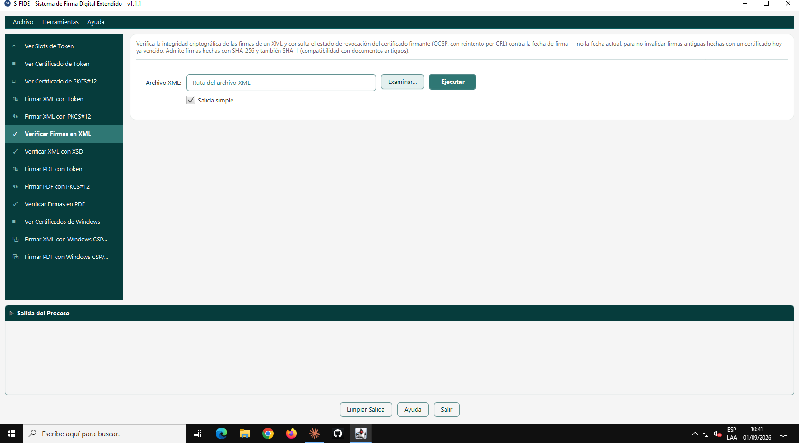
Campos
- Archivo XML: el documento firmado a verificar.
- Salida simple: tildada por defecto, reduce el detalle de lo que se imprime.
Qué puede pasar al presionar Ejecutar
Documento válido — todas las firmas son íntegras y sus certificados no están revocados.
Documento inválido — alguna firma no es íntegra, o su certificado fue revocado (en ese caso se explica en texto plano: "el certificado fue revocado por su autoridad certificante... esta firma se considera INVÁLIDA por ese motivo").
Error — archivo inexistente, o el XML no contiene ninguna firma digital.
La consulta de revocación (OCSP/CRL) necesita conexión a Internet para dar un resultado completo.
7. Verificar XML con XSD
XMLVerifyXSDStructureValida que un XML cumpla la estructura de su esquema XSD —externo o el indicado por el propio documento— y de paso verifica también sus firmas digitales. Para documentos ALADI/MERCOSUR usa el esquema oficial, con reintento automático por un dominio espejo si el sitio de ALADI no responde.
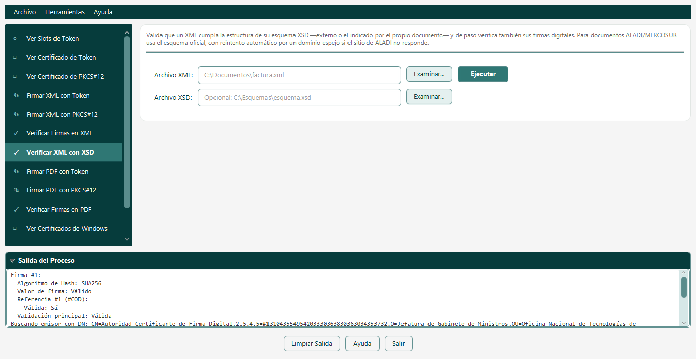
Campos
- Archivo XML: el documento a validar.
- Archivo XSD (opcional): déjelo vacío para que S-FiDE busque y descargue automáticamente el esquema referenciado dentro del propio XML; indique uno local si prefiere validar sin depender de Internet.
Qué puede pasar al presionar Ejecutar
Éxito — confirma que la estructura cumple el esquema y muestra el resultado de verificar las firmas presentes.
Error — XML o XSD inexistente, no se encontró referencia a ningún esquema y tampoco se indicó uno, error al descargar el esquema, el contenido descargado no es un XSD válido, o sin conexión a Internet cuando hacía falta descargar algo.
Este módulo no confirma si el certificado fue revocado — lo indica explícitamente al finalizar. Si eso importa, corra además "Verificar Firmas en XML" sobre el mismo archivo.
8. Firmar PDF con Token
PDFSignerPKCS11Firma digitalmente un documento PDF con la clave privada de un token criptográfico, usando SHA-256. La firma puede ser invisible o mostrarse en un recuadro con firmante, fecha y texto personalizado en coordenadas específicas de la primera página, y opcionalmente puede bloquear el documento contra modificaciones posteriores (certificación + cifrado).
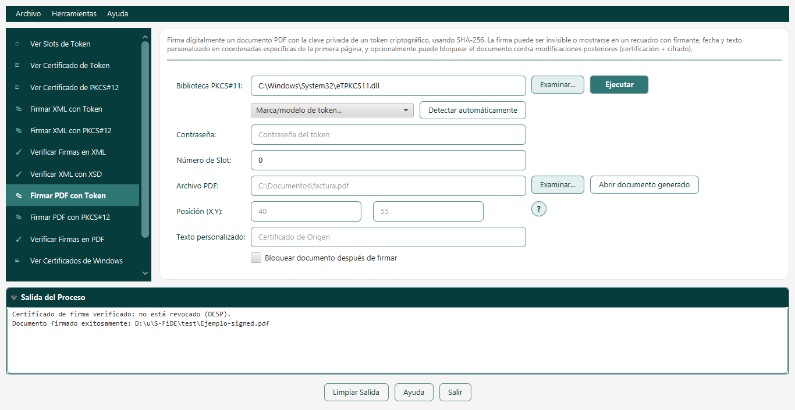
Campos
- Biblioteca PKCS#11, Contraseña, Número de Slot: igual que en los módulos de token XML.
- Archivo PDF: el documento a firmar.
- Posición (X,Y): deje ambos en
0para una firma invisible (igual de válida, pero no se dibuja nada); indique coordenadas para una firma visible. El origen(0,0)es la esquina inferior izquierda de la página, y esas coordenadas ubican la esquina inferior izquierda del recuadro de firma. - Texto personalizado: se agrega debajo del nombre del firmante y la fecha; no tiene efecto si la firma es invisible.
- Bloquear documento después de firmar: certifica el PDF ("sin cambios permitidos") y lo cifra en AES-256. Solo puede haber una firma certificante por documento, y debe ser la primera — si planea agregar más firmas después, no la marque en la primera.
Qué puede pasar al presionar Ejecutar
Éxito — crea <nombre>-signed.pdf junto al original. Si el token necesitó un mecanismo de hash alternativo, se lo informa igual sin que tenga que hacer nada al respecto. Antes de firmar, valida que el certificado no esté revocado — ver el recuadro de "Firmar XML con Token".
Error — PDF o biblioteca inexistente, el PDF ya está encriptado, alguna firma preexistente del PDF no es válida, el token no tiene clave privada o cadena de certificados válida, el certificado está revocado, o error al acceder a la clave.
9. Firmar PDF con PKCS#12
PDFSignerPKCS12Firma digitalmente un documento PDF con SHA-256, igual que la versión con token, pero usando un archivo de certificado PKCS#12 (.p12/.pfx) — ideal para pruebas, automatización de servidor, o certificados que no requieren hardware.
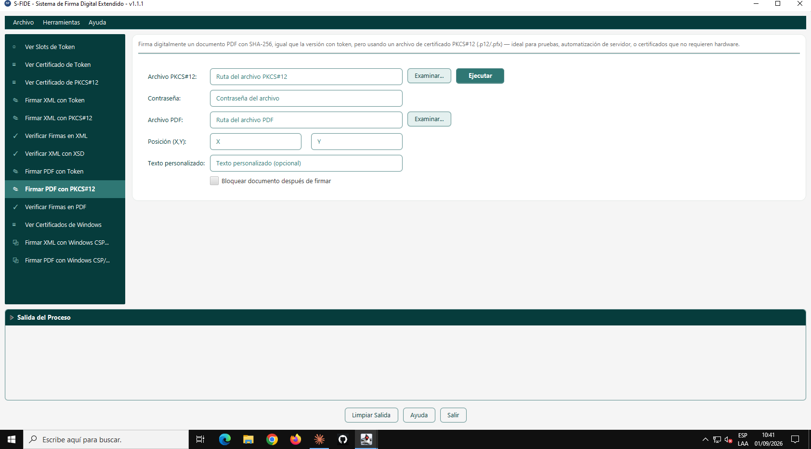
Campos
Los mismos que "Firmar PDF con Token", cambiando biblioteca/slot por Archivo PKCS#12 y Contraseña del certificado.
Qué puede pasar al presionar Ejecutar
Éxito — mismo resultado que "Firmar PDF con Token". Antes de firmar, valida revocación con diálogo de confirmación si no se puede determinar — ver el recuadro en "Firmar XML con PKCS#12".
Error — PDF o certificado inexistente, PDF ya encriptado, firma preexistente inválida, certificado sin clave privada o cadena válida, o certificado revocado.
10. Verificar Firmas en PDF
PDFVerifySignaturesVerifica la integridad criptográfica de cada firma de un PDF, si cubre todo el documento o solo una versión anterior, si está bloqueado/cifrado, y el estado de revocación del certificado firmante (OCSP con reintento por CRL) contra la fecha de firma. Admite firmas hechas con SHA-256 y también SHA-1 (compatibilidad con documentos antiguos).
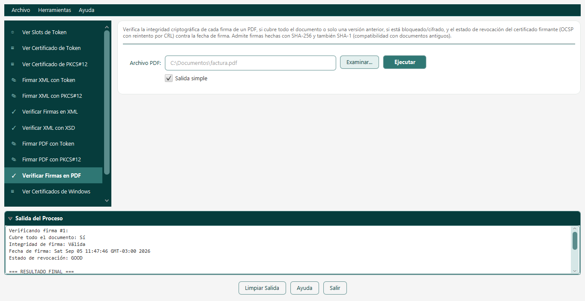
Campos
Igual que "Verificar Firmas en XML": Archivo PDF y la casilla Salida simple.
Qué puede pasar al presionar Ejecutar
Éxito — por cada firma: cobertura, integridad, fecha, revocación, firmante, organización, vigencia, emisor y algoritmo; al final, si el documento está bloqueado y/o encriptado.
Documento inválido — alguna firma no es válida, el certificado estaba revocado al momento de firmar, es un certificado no confiable/autofirmado, o no se pudo obtener el certificado firmante.
Error — el documento no contiene ninguna firma digital.
11. Ver Certificados de WindowsSolo Windows
WindowsCertificateStoreViewMuestra el contenido del almacén "Personal" de certificados de Windows: alias, sujeto (CN), emisor, vigencia, número de serie y si tiene clave privada — el mismo rol que "Ver Slots de Token" cumple para un token PKCS#11, pero para el almacén de Windows. Úselo antes de firmar con "Firmar XML/PDF con Windows CSP/KSP" si no conoce con exactitud el alias o el nombre (CN) del certificado que necesita. No requiere contraseña ni configuración alguna.
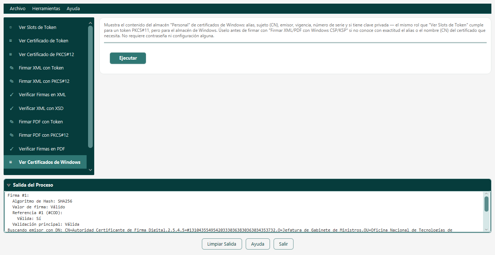
Es el único módulo sin ningún campo que completar — presione "Ejecutar" directamente. Así se ve un resultado real, ejecutado en esta misma máquina (que no tiene certificados en el almacén):
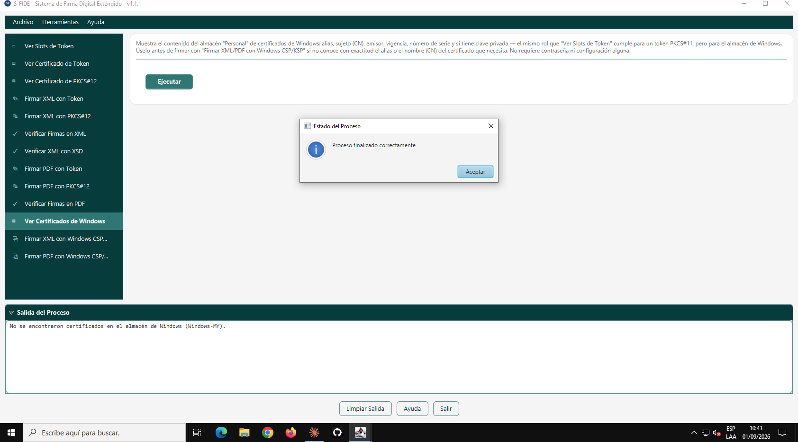
Qué puede pasar al presionar Ejecutar
Éxito — lista alias, sujeto, emisor, vigencia, número de serie y si tiene clave privada de cada certificado; si el almacén está vacío, informa "No se encontraron certificados en el almacén de Windows (Windows-MY)" — no es un error, como muestra la captura de arriba.
12. Firmar XML con Windows CSP/KSPSolo Windows
XMLSignerWindowsCSPFirma usando un certificado ya presente en el almacén de certificados de Windows (CSP/KSP), sin necesitar configurar una librería PKCS#11. Es más simple si el certificado ya aparece en el Administrador de certificados de Windows, pero queda atado a Windows (no es portable a Linux/macOS). Para la mayoría de los casos, PKCS#11 ("Firmar XML con Token") sigue siendo la opción recomendada por ser estándar y multiplataforma; use esta alternativa si prefiere la integración nativa de Windows.
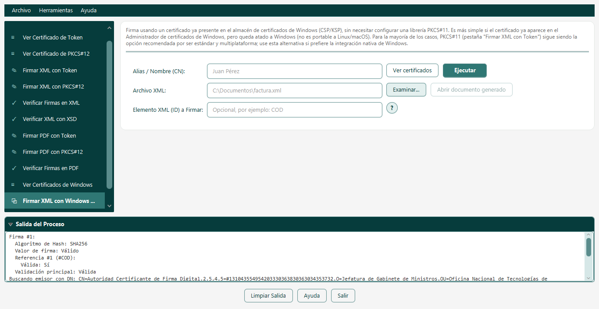
Campos
- Alias / Nombre (CN): el alias exacto del certificado, o un fragmento de su nombre que identifique a uno solo. El botón "Ver certificados" abre el mismo listado que el módulo anterior si no lo conoce con exactitud.
- Archivo XML y Elemento XML (ID) a Firmar: igual que en los otros firmadores de XML.
No pide contraseña — el acceso a la clave lo administra Windows, que puede mostrar un diálogo nativo del sistema pidiendo el PIN.
Qué puede pasar al presionar Ejecutar
Éxito — mismo resultado que los demás firmadores de XML: <nombre>-signed.xml. Antes de firmar, valida revocación con diálogo de confirmación si no se puede determinar — ver el recuadro en "Firmar XML con PKCS#12".
Error — no se encontró ningún certificado que coincida con el alias indicado, el texto coincide con más de un certificado (sea más específico), el proveedor de Windows no está disponible, el certificado está revocado, o las mismas reglas de firma (elemento ya firmado, orden CODEH/DJOEH) que los demás firmadores XML.
Windows puede abrir un diálogo pidiendo el PIN en cada documento firmado, sin que S-FiDE pueda evitarlo — es una política de seguridad de Windows, no un defecto del programa. Para firmar muchos documentos sin intervención, use "Firmar XML con Token" o "Firmar XML con PKCS#12".
13. Firmar PDF con Windows CSP/KSPSolo Windows
PDFSignerWindowsCSPEl equivalente de "Firmar XML con Windows CSP/KSP" para documentos PDF — mismas opciones de posición, texto y bloqueo que "Firmar PDF con Token".
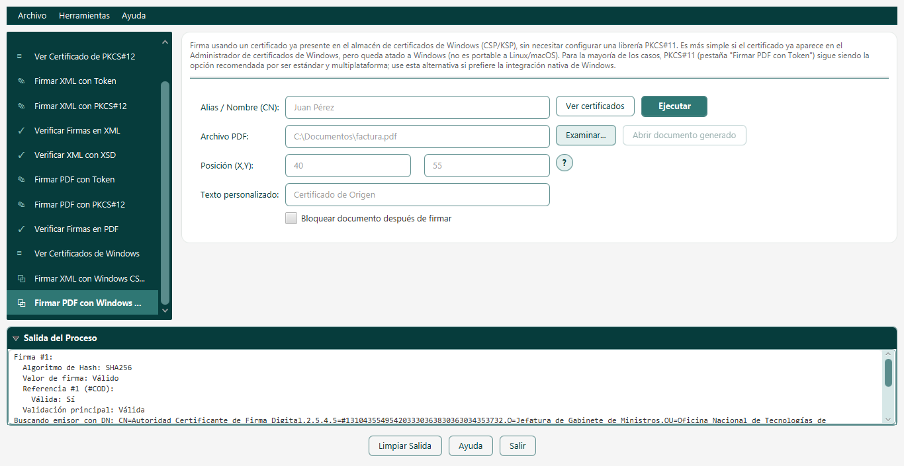
Campos
Los mismos que "Firmar PDF con Token", cambiando biblioteca/contraseña/slot por el campo Alias / Nombre (CN) del módulo anterior.
Todos los campos son opcionales salvo el alias. Así se ve, en una captura real, el aviso que aparece si se presiona "Ejecutar" dejándolo vacío:
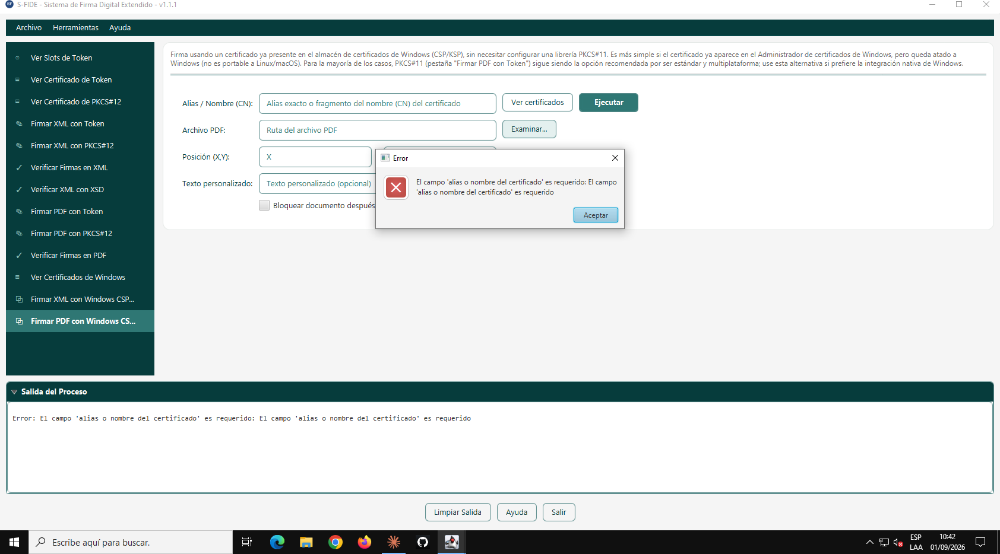
Qué puede pasar al presionar Ejecutar
Éxito — mismo resultado que "Firmar PDF con Token". Antes de firmar, valida revocación con diálogo de confirmación si no se puede determinar — ver el recuadro en "Firmar XML con PKCS#12".
Error — el campo alias es requerido (validado antes de ejecutar nada, ver captura), no se encontró o hay más de un certificado que coincide, PDF ya encriptado, firma preexistente inválida, certificado revocado, más los errores de acceso al almacén de Windows del módulo anterior.
Mismo motivo que en la versión XML: Windows puede pedir el PIN por diálogo en cada documento. Para firmar muchos PDF sin intervención, use "Firmar PDF con Token" o "Firmar PDF con PKCS#12".
Dónde quedan los archivos generados
| Módulo | Archivo generado | Dónde queda |
|---|---|---|
| Firmadores de XML (3) | <nombre>-signed.xml | En la misma carpeta que el XML original |
| Firmadores de PDF (3) | <nombre>-signed.pdf | En la misma carpeta que el PDF original |
| Extractores de certificado (2) | <nombre-del-certificado>.pem | En la carpeta donde está instalado S-FiDE — no en la carpeta del token ni la que haya elegido |
Los módulos de "ver"/"verificar" no generan ningún archivo: todo su resultado se muestra en el panel "Salida del Proceso".
En las seis pestañas de firma, junto al campo del documento de entrada aparece un botón "Abrir documento generado", deshabilitado hasta que la firma termina con éxito y el archivo -signed correspondiente realmente existe en disco. Al presionarlo, abre ese documento en el navegador web predeterminado del sistema. Si edita el campo del documento de entrada después de firmar, el botón se deshabilita — ya no corresponde necesariamente a lo que ve en pantalla.
La ventana de Ayuda
El botón Ayuda, presente en cualquier pantalla, abre una ventana con seis solapas — vale la pena conocerla, tiene contenido que esta guía no repite en detalle:
Guía Rápida
Preguntas Frecuentes
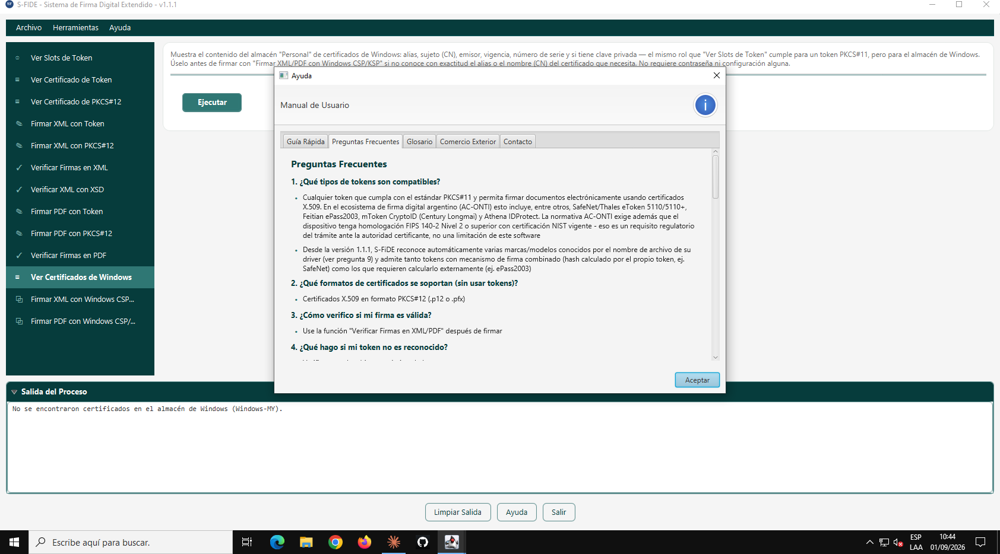
Glosario
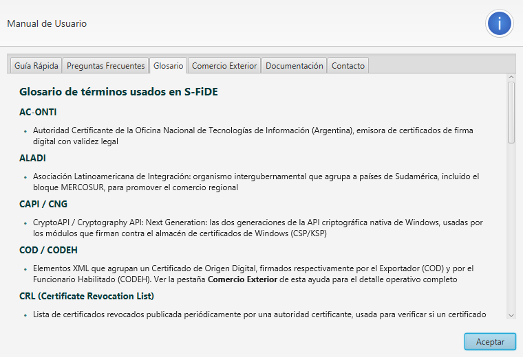
Comercio Exterior
Exclusiva para quien trabaja con Certificados de Origen Digital o Declaraciones Juradas de Origen (COD/CODEH/DJO/DJOEH) — qué escribir exactamente en "Elemento XML (ID) a Firmar" en cada etapa, y las reglas de orden obligatorias.
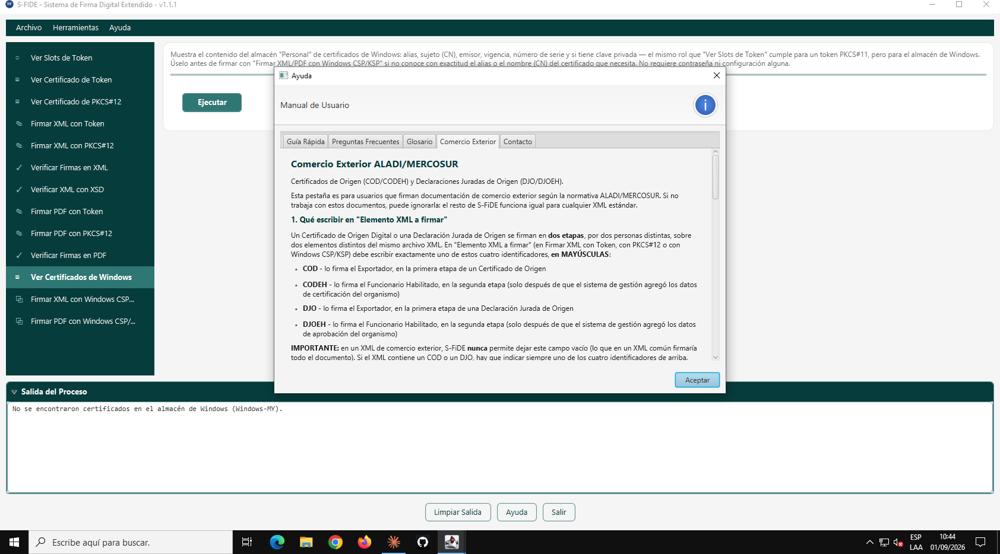
Documentación
Enlaces para abrir, con un clic, en el navegador web predeterminado del sistema (Windows, Linux o macOS), los documentos HTML de la carpeta doc de esta instalación: la Guía de Usuario que está leyendo y el Manual Técnico de Integración — cada uno con una breve descripción de su contenido.
Contacto
Datos de soporte técnico y de la empresa, incluyendo un enlace al sitio web de Grupo Sauken y otro a la página del proyecto en GitHub.
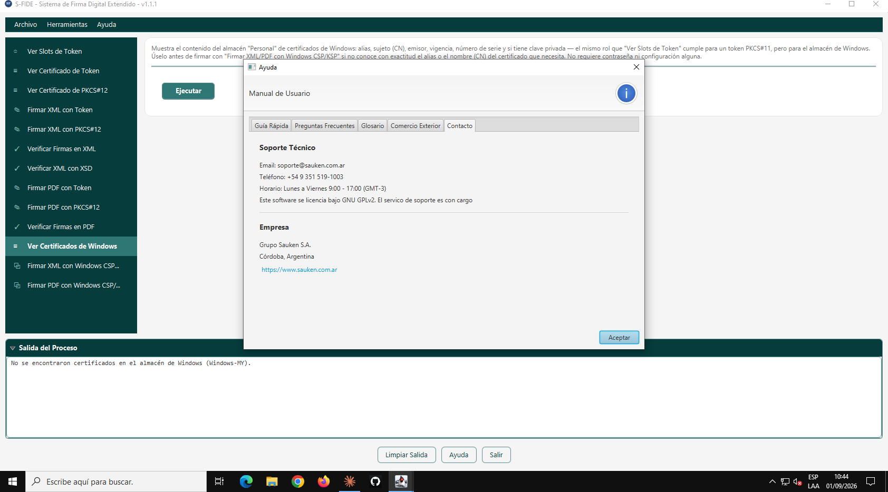
Problemas comunes
| Situación | Qué hacer |
|---|---|
| No sé qué número de slot usar | Corra primero "Ver Slots de Token" — el número que muestra ahí es el que hay que usar, no el que muestre alguna herramienta del fabricante. |
| No sé el alias/CN de mi certificado de Windows | Corra "Ver Certificados de Windows" primero, o use el botón "Ver certificados" en el propio formulario de firma. |
| Windows me pide el PIN en cada documento | Es esperable con los módulos CSP/KSP — no hay forma de evitarlo. Para firmar varios documentos sin interrupciones, use el módulo equivalente de Token o PKCS#12. |
| No encuentro el archivo firmado | Queda en la misma carpeta que el archivo original (ver la tabla de la sección anterior) — no en la carpeta de instalación de S-FiDE. |
| No encuentro el .pem que extraje | A diferencia de los firmadores, este sí queda en la carpeta de instalación de S-FiDE, no junto al token/archivo de origen. |
| El programa dice que un archivo "no existe" | Use siempre el botón "Examinar..." para elegir el archivo en vez de escribir la ruta a mano — evita errores de tipeo. |
Para integradores y más ayuda
Si necesita invocar estos mismos programas desde otra aplicación por línea de comandos (sin la interfaz gráfica), o el detalle técnico completo de cada mecanismo de firma, revocación, y la especialización de comercio exterior ALADI/MERCOSUR, consulte el Manual Técnico de Integración.
Para soporte comercial: Grupo Sauken S.A. — www.sauken.com.ar.